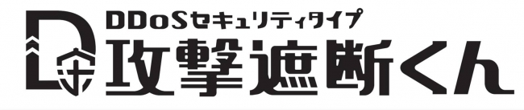
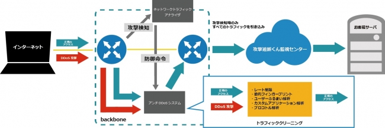
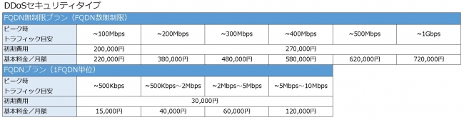

株式会社サイバーセキュリティクラウド（本社：東京都渋谷区、代表取締役：新田 憲佑、以下「サイバーセキュリティクラウド」）は、2016年8月4日（木）より、 Webサイト・Webサーバへのサイバー攻撃を防ぐ「攻撃遮断くんシリーズ」に、新たなラインナップとして「攻撃遮断くん（DDoSセキュリティタイプ）」の提供を開始いたします。

■DDoS攻撃に関する近年の傾向
DDoS攻撃とは、コンピューターウイルスによって多くのパソコンやサーバに遠隔操作できる攻撃用プログラムを送り込み、攻撃の踏み台を増やし、外部からの指令で一斉に攻撃を行わせるネットワーク（ボットネット）を形成した上で実施する攻撃手法です。ターゲットとなるサーバに処理負荷を与え、Webサービスを機能停止状態へ追い込みます。
DDoS攻撃を受けると、サーバ負荷によりWebサイトのレスポンス低下や、サーバダウンにつながる可能性があります。Webサービスを展開するビジネスではダウンタイムは致命傷となり、機会損失につながるだけでなく、ブランドイメージの大幅な低下も予想されます。さらに、場合によっては企業側が十分な対策を取らなかったとして、訴訟を起こされてしまう可能性もあります。このようにDDoS攻撃は、“機会損失”や“風評被害”などにより、高額な損失につながる可能性があります。
近年のDDoS攻撃の平均攻撃サイズは1Gbps未満となっており、全体攻撃の80％は1Gbpsと言われています。ツールを利用して自動化されている場合が多く、長時間に及ぶサイバー攻撃が増加すると予想されます。その理由のひとつとして、現在注目されているIoTも理由に挙げられています。例えば世界各地の防犯カメラを利用したボットネットも形成されており、ネットワークに接続していればどんなガジェットも踏み台の対象になってしまう可能性があるため、今後もDDoS攻撃は増える傾向にあると予想されます。
■ラインナップ追加の背景
今回、「攻撃遮断くん（Webセキュリティタイプ）」のオプションとなる「DDoSオプション」をお客様から選択いただく機会が多く、また、昨今のDDoS攻撃の増加に伴って市場のニーズの高まりを判断し、オプションから切り離して新たなタイプとしてラインナップに加えることを決定致しました。この度のリニューアルにより、お客様見つけやすさ選びやすさの向上を図ります。
■「攻撃遮断くん（DDoSセキュリティタイプ）」とは
「攻撃遮断くん（DDoSセキュリティタイプ）」 は、 WEBサイトへのあらゆる攻撃を遮断するSaaS型WAFに加え様々なロジックで解析するアンチDDoSシステムを備えています。 WAFでは防御できないDoS/DDoS攻撃を、お客様ネットワークより上位のネットワーク側で検知/軽減することにより、サーバやネットワーク機器、インターネット回線までを含めた防御が可能なクラウド型セキュリティサービスです。現在主流になっているDDoS攻撃のほとんどは攻撃遮断くんにて対応可能範囲となり、DDoS攻撃に対応するセキュリティサービスは高額なサービスが多い中、月額15,000円からご利用が可能です。
■「攻撃遮断くん（DDoSセキュリティタイプ）」の特徴
お客様ネットワークに最適化したポリシー
サービス開始にあたって、事前に防御対象ネットワークのトラフィックを学習/分析します。その学習結果に基づいて、お客様ネットワークに最適化した防御ポリシーを設定することにより、精度の高いクリーニングを実現します。
不正なトラフィックを選択的に遮断
平常時は、ネットワークトラフィックアナライザによってトラフィックのモニタリングのみを実施し、異常を検知した場合のみ、お客様サーバ/ネットワーク宛のすべての通信をアンチDDoSシステムへ引き込みます。アンチDDoSシステムは引き込んだ通信を精査し、不正なトラフィックをクリーニングの上、正常な通信をお客様サーバ/ネットワークへ転送します。

■「攻撃遮断くん（DDoSセキュリティタイプ）」料金表

【サイバーセキュリティクラウド会社概要】
■会社名：株式会社サイバーセキュリティクラウド
■設立：2010年8月
■資本金：1億4,450万円 ※資本準備金を含む
■代表者：代表取締役 新田 憲佑
■事業内容：サイバーセキュリティ事業
(1)「攻撃見えるくん」「攻撃遮断くん」の開発・運用・保守・販売
(2) サイバー攻撃対策コンサルティング
■販売代理店：株式会社ブロードバンドタワー、GMOクラウド株式会社
株式会社ネットワールド、鈴与シンワート株式会社、
株式会社TOKAIコミュニケーションズ、その他IDC、Sierなど数十社
■ソリューションパートナー ：ビッグローブ株式会社、株式会社インターネットイニシアティブ
SOFTLAYER、an IBM Company、フュージョン・コミュニケーションズ株式会社
■企業ホームページ ：http://www.cscloud.co.jp/
■サービスページ ：https://shadan-kun.com/
【本件に関する報道関係者からの問い合わせ先】
株式会社サイバーセキュリティクラウド
担当：川島
TEL：03-5774-2538
pr@cscloud.co.jp